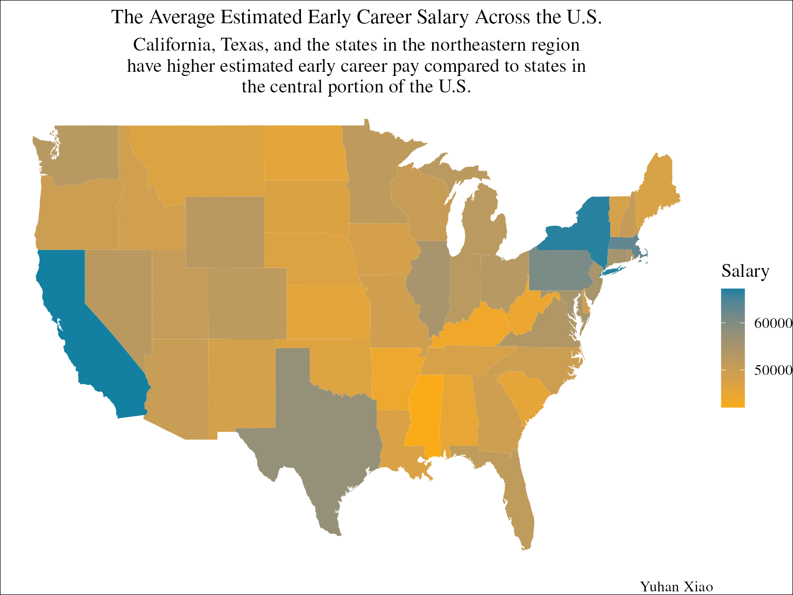

Overview
In this vignette, I will analyze a dataset about estimated salary for
college students. The goal here is to demonstrate the functions from the
R package bbplot and wrangle and plot the example data from
TidyTuesday.
Question: How does the early career pay differ across the U.S.? What is the relationship between early career pay and mid career pay? What is the relationship between early career pay and STEM percent of student body?
Audience: R package
bbplotusers who are interested in seeing example data wrangling and visualizations.Dataset: I obtained the original dataset from TidyTuesday.
Data dictionary: I referred to this data dictionary from TidyTuesday.
Data Analysis
Step 2: load data
# check if a directory named data exists locally
if (!dir.exists(here("data"))) {
# if not, create it programmatically
dir.create(here("data"))
}
# check whether we have the input data
if (!file.exists(here("data", "salary_potential.rda"))) {
# If we don't, then download the data
salary_potential <- read_csv("https://raw.githubusercontent.com/rfordatascience/tidytuesday/master/data/2020/2020-03-10/salary_potential.csv")
save(salary_potential, file = here("data", "salary_potential.rda"))
}
# load the data
load(here("data", "salary_potential.rda"))Step 3: data wrangling
# check the content of the data set
head(salary_potential)
#> # A tibble: 6 × 7
#> rank name state_name early_career_pay mid_career_pay make_world_better_pe…¹
#> <dbl> <chr> <chr> <dbl> <dbl> <dbl>
#> 1 1 Aubur… Alabama 54400 104500 51
#> 2 2 Unive… Alabama 57500 103900 59
#> 3 3 The U… Alabama 52300 97400 50
#> 4 4 Tuske… Alabama 54500 93500 61
#> 5 5 Samfo… Alabama 48400 90500 52
#> 6 6 Sprin… Alabama 46600 89100 53
#> # ℹ abbreviated name: ¹make_world_better_percent
#> # ℹ 1 more variable: stem_percent <dbl>
map_chr(salary_potential, .f = typeof)
#> rank name state_name
#> "double" "character" "character"
#> early_career_pay mid_career_pay make_world_better_percent
#> "double" "double" "double"
#> stem_percent
#> "double"
map_int(salary_potential, .f = ~ length(unique(.x)))
#> rank name state_name
#> 25 934 50
#> early_career_pay mid_career_pay make_world_better_percent
#> 310 453 59
#> stem_percent
#> 74
# calculate the average estimated early career pay
salary_st_avg <- salary_potential %>%
select(name, state_name, early_career_pay) %>%
rename(region = state_name) %>%
mutate(region = tolower(region)) %>%
group_by(region) %>%
summarise(
avg_early_career_pay = mean(early_career_pay)
)
# find coordinates for us states
us_map <- map_data("state") %>%
mutate(region = gsub(" ", "-", region))
# add salary info to the map
map_salary_st_avg <- us_map %>%
left_join(salary_st_avg, by = join_by(region))
# select salary info from states of interest
salary <- salary_potential %>%
select(state_name, early_career_pay, mid_career_pay) %>%
rename(state = state_name) %>%
mutate(state = tolower(state))
# break the data set down into groups defined by states
by_state <- split(salary, salary$state)
# calculate average early pay and mid pay for each state
early_pay <- map_dbl(by_state, ~ mean(.x$early_career_pay, na.rm=TRUE))
mid_pay <- map_dbl(by_state, ~ mean(.x$mid_career_pay, na.rm=TRUE))
# combine average pay into a table
pay_trend <- tibble(
state = names(early_pay),
avg_early_pay = early_pay,
avg_mid_pay = mid_pay
)Step 4: data visualization
# plot the average estimated early career pay across the US
map_salary_st_avg %>% ggplot() +
geom_polygon(aes(x = long, y = lat, group = group, fill = avg_early_career_pay)) +
scale_fill_gradient(low = "#FAAB18", high = "#1380A1") + # Adjust the color scale
labs(title = "The Average Estimated Early Career Salary Across the U.S.", subtitle = str_wrap("California, Texas, and the states in the northeastern region have higher estimated early career pay compared to states in the central portion of the U.S.", 60), caption = "Yuhan Xiao", fill = "Salary") +
theme_void(base_size = 14) +
theme(plot.title = element_text(hjust = 0.5, vjust = 1, size = 15),
plot.subtitle = element_text(hjust = 0.5),
plot.background = element_rect(fill = "white"),
text = element_text(family = "Times"))
- Note: 48 states and District of Columbia (D.C.) are included in this map. Alaska and Hawaii are not included in this map.
# plot the association between average early career pay to average mid career pay
pay_trend_plot <- pay_trend %>%
ggplot() +
geom_point(aes(x = avg_early_pay, y = avg_mid_pay)) +
labs(title = str_wrap("The Association Between Average Estimated Early Career Salary and Mid Career Salary by State", 30), subtitle = str_wrap("A higher early career salary is associated with a higher mid career salary", 40), x = "average early career salary", y = "average mid career salary", caption = "Yuhan Xiao") +
bbc_style()
# save the plot to local folder
finalise_plot(plot_name = pay_trend_plot,
source = "Source: TidyTuesday",
save_filepath = here("data","pay_trend-nc.png"),
width_pixels = 640,
height_pixels = 550,
logo_image_path = here("data","placeholder.png"))
- Note: I have added captions and axis labels. This plot, however, does not show these components because it follows the BBC style.
pay_stem_trend %>% ggplot(aes(x=stem_percent, y = early_career_pay, color = state)) +
geom_point() +
geom_smooth() +
facet_wrap(~state, nrow = 2) +
labs(title = str_wrap("The Association Between Average Estimated Early Career Salary and Percent of STEM students by State", 60), subtitle = str_wrap("A higher percent of student body in STEM is associated with a higher estimated early career salary", 60), x = "STEM percent", y = "average early career salary", caption = "Yuhan Xiao") +
theme_minimal(base_size = 14) +
theme(plot.title = element_text(hjust = 0.5, vjust = 1, size = 15),
plot.subtitle = element_text(hjust = 0.5),
axis.text.x = element_text(angle = 0, hjust = 1),
plot.background = element_rect(fill = "white"),
text = element_text(family = "Times"),
legend.position = "none")
Summary
Colleges have higher estimated early career salary for students if they are located in California, Texas, the northeastern region or if they have a higher percent of student body in STEM. A higher early career salary is associated with a higher mid career salary.
Functions
-
bbplot:bbc_style(),finalise_plot() -
dplyr:select(),group_by(),summarise(),mutate(),rename(),filter() -
stringr:str_wrap() -
purrr:map_dbl(),map_chr(),map_int() -
ggplot2:geom_polygon(),geom_point(),geom_smooth(),facet_wrap()